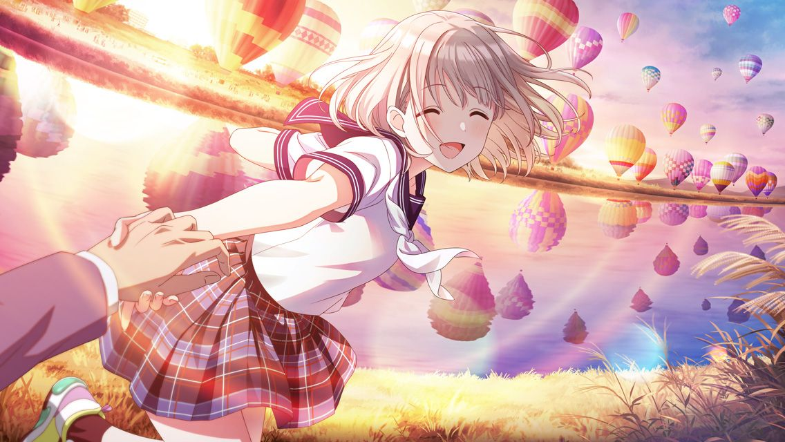
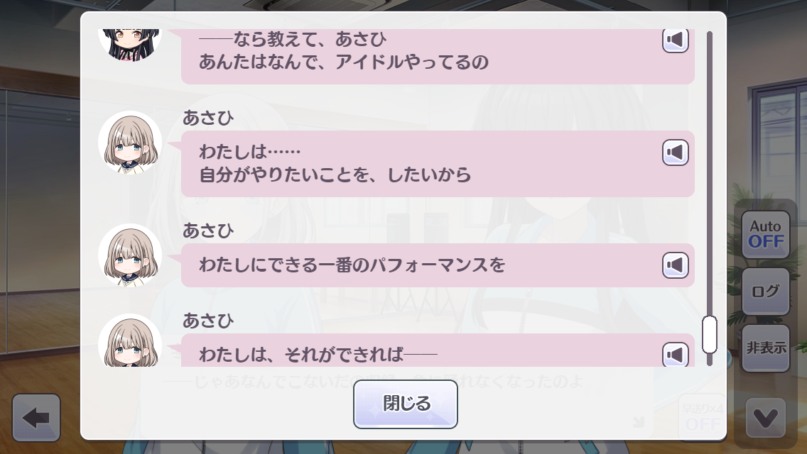
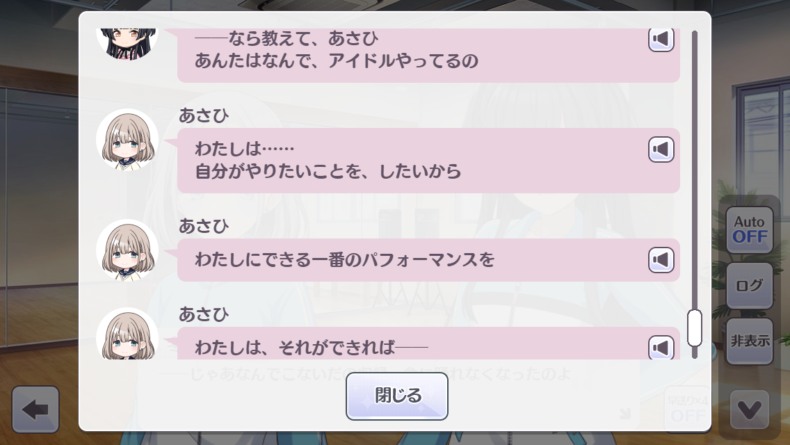

好きなもの語り 芹沢あさひ
推しを布教する回、第一回。芹沢あさひについて。
目次
芹沢あさひってだれ？
283プロ所属アイドル、
ストレイライトのセンター。中学二年生。好奇心の擬人化。そんな子です。何はともあれ、
公式ホームページの紹介ページを一旦ご覧ください。だいたいわかります。ボイスとかも聞けるので聞いてみるといいかもしれません。
「良さ」を語っていく
ぼくはもうシャニマスを初めて2年ほど経つんですが、未だにあさひに対する熱は衰える気配がありません。大体の人はこんな風に思ってるかもしれません。
芹沢あさひというアイドルの魅力は、主に「ギャップやジャンルの振れ幅」にあります。ストレイライト自体が全体的にそういう傾向の強いユニットではあるんですが、特にあさひはあっと驚かされるような切り口からのアプローチが多く、ぼくはそういうところに惹かれています。
一体何がそんなに良いのか？
いいでしょう。こんなページを見に来てくださってるんです。順番に紹介させてもらいましょう。
芹沢あさひというアイドルの魅力は、主に「ギャップやジャンルの振れ幅」にあります。ストレイライト自体が全体的にそういう傾向の強いユニットではあるんですが、特にあさひはあっと驚かされるような切り口からのアプローチが多く、ぼくはそういうところに惹かれています。
圧倒的集中力とストイックさ
あさひの魅力その一、集中力です。
芹沢あさひはいわゆる「天才型」などと言われがちですが、ぼくはそれは少し違うと思います。新しいことにはしっかり集中して取り組み、そこで得た経験を感覚で理解している。だからこそ、「こうすれば良い」といったノウハウを無意識のうちに実践できてるんだと思います。つまり努力型の一種です。とはいえ「努力できるのも才能」などと言いますし、ある意味これも天才のひとつですけどね。
芹沢あさひはいわゆる「天才型」などと言われがちですが、ぼくはそれは少し違うと思います。新しいことにはしっかり集中して取り組み、そこで得た経験を感覚で理解している。だからこそ、「こうすれば良い」といったノウハウを無意識のうちに実践できてるんだと思います。つまり努力型の一種です。とはいえ「努力できるのも才能」などと言いますし、ある意味これも天才のひとつですけどね。
モードに入ると止まりません。
普段はなんとなくふわふわ～な雰囲気が見た目から漂っていますが、いざ集中するとその空気が一気に引き締まります。これもまたギャップの一つです。パフォーマンスの才も確かに良い点ではありますが、ぼくはそれよりもまっすぐに目標を見据えて励む姿そのものに魅力を感じます。本当にカッコいい。
しかし、それだけではありません。あさひは決して満足しないストイックさも併せ持っています。
どこまでも、限りなく、ひたすらに上を目指す姿勢。惚れますってこんなの。
常に上しか見てないんです。だから上がり続けられる。上限なんてないんだから。
ただし、突っ走りすぎて失敗したり、周りに迷惑をかけちゃうこともしばしば。まあ中学生ですしね。そこはプロデューサーであるぼくらがしっかりと支えてやらないといけないですね。
純粋無垢の精神
あさひの行動原理は単純明快。やりたいことをやる、それだけです。
ここまでわかりやすい理由、そしてそれに向けて動くのを見ていると、もう眩しくてしょうがないです。幼い頃に失った純粋な気持ちみたいなものがもう一度宿ったような気分になれます。 
ここまでわかりやすい理由、そしてそれに向けて動くのを見ていると、もう眩しくてしょうがないです。幼い頃に失った純粋な気持ちみたいなものがもう一度宿ったような気分になれます。 
本人談。
こんなに純粋だから、あさひがワクワクしてるときの表情って本当に輝いて見えるんですよね。シャイニーカラーズのシャイニーの部分です。
キラキラを見つけたあさひ。
ビジュアルの良さ
ビジュアル面からもギャップを感じることができます。あさひってすごいんですよ。とにかく何をやらせてもレベルの高い合格点をオールウェイズ出してくれます。
これがべりべりきゅーとなあさひ。なでたい。
こっちが卒倒するレベルでイケメンのあさひです。射抜かれそうな視線、ドキッときちゃうね…
ヤバくないですか？ちなみにこの2つは同じカードの別衣装です。とんでもないですねシャニマス。
ちなみに、定期的に追加されるコスチュームの破壊力もえげつないです。
みんなちがって、みんなかわいい
モチーフは全然違うのに、どれも異なった種類のかわいいを演出できてて非常に素晴らしい。これはあさひが、っていうよりシャニマスがすごいです。いつもありがとう高山P。
ストレイライトがネオンでビビッドなテーマなので、カッコいい成分はここから曲とともに無限に摂取できます。
ストレイライトのデフォルト衣装「ネオンライトロマンサー」。
ストレイライトの二年目衣装「隠匿シンギュラリティ」。
これについては長くなりそうなので、詳しくはストレイライトのページで話しましょう。
ギャップを感じられる瞬間、いろいろ
「～っす」が口癖みたいになってるあさひですが、あくまで敬語が変形しただけなので、タメや年下には普通に喋ります。
年下に対して普通に喋るあさひ。
とはいえ、あさひの年齢的にも基本絡むのは年上ばかりのため、聞ける機会はそうそうありません。だからこそ、突然タメ語が出てくるとそのギャップに萌えを感じたりできるんですね。似たような事例として、書いた文章にもちょっとだけ普段の喋り言葉との差が出ます。
これは普通に至言だと思う。
まとめ（的なもの）
ストレイライトのメンバーとの絡み、シナリオを追うごとに感じられるあさひ自身の成長など、芹沢あさひのいいところを挙げるとキリがありませんが、一旦はこのくらいにしておこうと思います。
ちょっとでも「気になった！」という人は、ぜひ実際にシャニマスをプレイして、魅力的なキャラクターに惹かれてみると良いと思います。ぜひやってみてください！！下の招待リンクを踏んで初回プレイをするとぼくが喜びます。
＞＞チュートリアルクリアでガシャチケットがついてくる招待リンク＜＜
ちょっとでも「気になった！」という人は、ぜひ実際にシャニマスをプレイして、魅力的なキャラクターに惹かれてみると良いと思います。ぜひやってみてください！！下の招待リンクを踏んで初回プレイをするとぼくが喜びます。
＞＞チュートリアルクリアでガシャチケットがついてくる招待リンク＜＜
おまけ
せっかくなので推し活の軌跡でも残しておきます。
3.5周年Pカップ。最終成績は64位でした。
ぼくが描いた絵です。めっちゃバズってうれしかった。
出典
アイドルマスター シャイニーカラーズコメントを読み込んでいます...